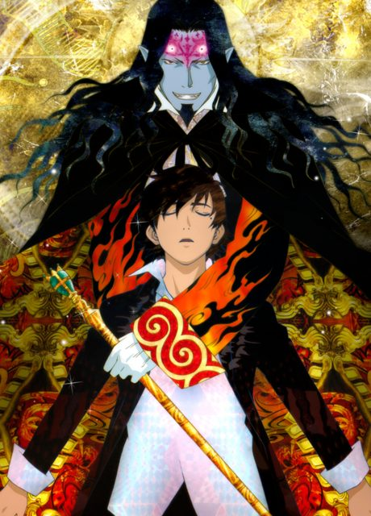

Steins;Gate
シュタインズ・ゲート
Okabe, a self-proclaimed mad scientist, accidentally builds a device that can send messages to the past.
An original anime, so there's no book to continue with.
8.9AniList score
—Animeter, no votes yet
24episodes
Rate it or report where you stopped
Watch order
In airing order. Episode numbers on this site count straight through every season, so season 2 starts at episode —.
1
2011 · TV
Steins;Gate
Episodes1–2424 ep
Films, OVAs and specials
Not counted in the episode numbers above.
·
2012 · OVA
Steins;Gate: Egoistic Poriomania
·
2013 · Film
Steins;Gate The Movie – Load Region of Déjà Vu
Sources: AniList
More like Steins;Gate
 Original7.4
Original7.4
 Original8.1
Original8.1
 Original8.5
Original8.5
 Original8.0
Original8.0
 Unclear7.6
Unclear7.6
 Film7.5
Film7.5

Original7.8 Original7.7
Original7.7
 Unclear7.1
Unclear7.1
 Original8.6
Original8.6
 Done7.4
Done7.4
 Manga Vol. 27.7
Manga Vol. 27.7